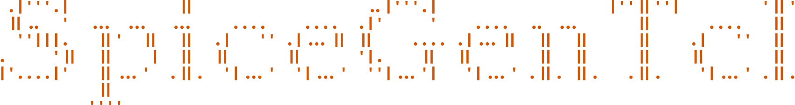
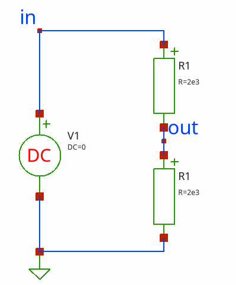

This package provides Tcl interface to different SPICE and SPICE-like simulator, Ngspice, Xyce. It was inspired by PySpice project, object-oriented interface to SPICE-like simulators written in Python.
General conceptTop, Main, Index
The general concept of the package is to build a netlist using Tcl scripts. It is based on the TclOO object-oriented system, where everything is represented by objects, including elements, models, analyses, waveforms, and netlists. After defining the netlist, you can run the simulation, read the resulting data, and then process or display the data using the Tcl scripting language.
This approach differs from the Tclspice extension, which comes bundled with Ngspice and is tightly bound to the simulator's internal structures. SpiceGenTcl offers a more flexible approach that can be extended to work with different simulators that use netlists with similar syntax.
Usage examplesTop, Main, Index
SpiceGenTcl can be used if you need:
- automate some repetitive simulation tasks, and you don't like Nutmeg syntax (SPICE standard scripting language)
- postprocess output waveforms and data
- change netlist structure on the fly
- simulate different models in the same circuit setup
- run circuit optimization with parameters variations as well as variations in circuit topology
Install and dependenciesTop, Main, Index
To install the package you should extract archive with source code and add path of the package folder to auto_path variable:
lappend auto_path "path to SpiceGenTcl package"
Package is written in pure Tcl with relying on Tcllib and ticklecharts, tcl version is 9.0. The only necessary external dependency is the simulator itself.
After simulator installation add path to executable to PATH environment variable.
For code coverage test nagelfar is used, commit 845924 of master branch.
For view test coverage diffs eskil is used.
Documentation and tutorialsTop, Main, Index
Documentation could be found here.
Tutorials describing different examples could be found here.
Good tutorial for Tcl language could be found here
Documentation was generated with ruff!.
Tcl syntax highlightning was done with hl_tcl.
Supported platformsTop, Main, Index
I personally use Kubuntu 24.04, and I also tested package on Windows 11. On Kubuntu I use Tcl/Tk 9.0 compiled from sources, as well as Ngspice and Xyce. On Windows I use Magicsplat distribution of Tcl/Tk 9.0. For Ngspice and Xyce I use precompilled binaries.
Tcl is a cross-platform language, and because this package is written in pure Tcl, you can practically run it on any platform, including Windows, Linux (all flavors), and FreeBSD. Ngspice is available as pre-compiled binaries for Linux and Windows, but it can also be compiled on FreeBSD. Xyce is availible as pre-compiled for Windows, RHEL and MacOS, but can be compiled to any other platform.
Quick startTop, Main, Index
- Important note 1: internally, all device names, parameters, nodes, types, reference names, and data vector's names are converted to lowercase after object instantiation. While you can enter them in any case, they can only be accessed by their lowercase names. This approach aligns with the fact that most SPICE simulators are case-insensitive. To prevent ambiguity in Tcl code, where the simulator treats mixed-case names as identical, we convert everything to lowercase. This ensures that we can detect and resolve any duplicate names in the top-level circuit before generating the netlist.
- Important note 2: this package is not designed to be used with the
.controlsection in Ngspice, the .step statement in LTspice, or multiple DC sweeps, and it does not support reading parametric sweeps from raw data. The idea of the package is to handle all such tasks within a Tcl script, eliminating the need to use the simulator's internal scripting capabilities, and dependence on each simulator unique ways of handling parametric sweeps, that compromises compatibility. But it is could be done easily in principle to realize special objects and reading of raw files with parametric sweeps.
Packages importsTop, Main, Index
The first step is import of package:
package require SpiceGenTcl
Import all commands from ::SpiceGenTcl:
namespace import ::SpiceGenTcl::*
One of the commands is ::SpiceGenTcl::importNgspice. By calling this command, we can import all commands related to the Ngspice simulator, eliminating the need to add the ::SpiceGenTcl::Ngspice prefix before any command. Here's how to do it:
importNgspice
To plot results of simulation we also import package ticklecharts:
package require ticklecharts
Circuit definitionTop, Main, Index
Let's try to define simple resistor divider circuit with following netlist:
voltage divider netlist v1 in 0 1 r1 in out 1e3 r2 out 0 2e3 .dc v1 0 5 0.1

First step is creating circuit object:
set circuit [Circuit new {voltage divider netlist}]
The Circuit command creates a new object of the ::SpiceGenTcl::Circuit class, which is imported from the ::SpiceGenTcl namespace and represents the top-level circuit. The only argument we provide is the name of the circuit, which will be printed on the first line of the netlist.
The next step is building netlist by addding elements to top circuit object:
$circuit add [Vdc new 1 in 0 -dc 1] $circuit add [R new 1 in out -r 1e3] $circuit add [R new 2 out 0 -r 2e3] $circuit add [Dc new -src v1 -start 0 -stop 5 -incr 0.1]
An instance of the ::SpiceGenTcl::Circuit class, referenced by the circuit variable, has an ::SpiceGenTcl::Circuit::add method that appends the references of argument objects to it. The object-creating commands Vdc, R, and Dc — which represent a DC voltage source, a basic resistor, and a DC analysis, respectively — are imported from the ::SpiceGenTcl::Ngspice::Sources, ::SpiceGenTcl::Ngspice::BasicElements, and ::SpiceGenTcl::Ngspice::Analyses namespaces.
When using the new subcommand, you provide the basic arguments for the element. For example, in the R command, you would supply the name '1', the name of the net connected to the positive node 'in', the name of the net connected to the negative node '0' (which is the global ground), and the resistance value '1e3'.
The last necessary step is to create ::SpiceGenTcl::Simulator object with command Batch from ::SpiceGenTcl::Ngspice namespace and attach it to ::SpiceGenTcl::Circuit object:
set simulator [Batch new {batch1} {/usr/local/bin/}]
$circuit configure -Simulator $simulator
Now we are ready to run simulation:
$circuit runAndRead
After the simulation, we can read the resulting data. We use the ::SpiceGenTcl::Circuit::getDataDict method to obtain a dictionary where the keys are the names of the result vectors:
set data [$circuit getDataDict]
The we can get vectors v(in) and v(out) from dictionary data:
set axis [dict get $data v(in)] set trace [dict get $data v(out)]
Plotting dataTop, Main, Index
To plot results we use ticklecharts package:
foreach x $axis y $trace {
set x [format "%.3f" $x]
set y [format "%.3f" $y]
lappend xydata [list $x $y]
}
set chart [ticklecharts::chart new]
$chart Xaxis -name "v(in), V" -minorTick {show "True"} -min 0 -max 5 -type "value"
$chart Yaxis -name "v(out), V" -minorTick {show "True"} -min 0 -max 3.5 -type "value"
$chart SetOptions -title {} -tooltip {} -animation "False"
$chart Add "lineSeries" -data $xydata -showAllSymbol "nothing"
set fbasename [file rootname [file tail [info script]]]
$chart Render -outfile [file normalize [file join html_charts $fbasename.html]]
To view result, we should open rendered resistor_divider.html chart in browser.
